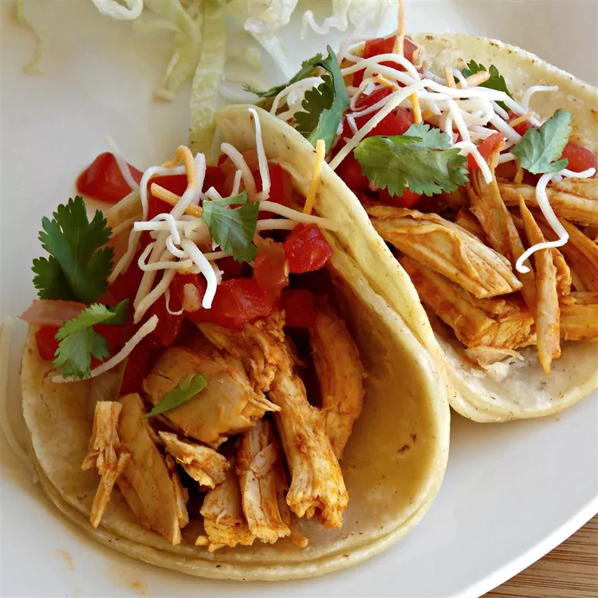

Mexican Tacos
Document

A little about mexican tacos
So long as you're filling or topping a tortilla, you're making a taco.
But which filling should you use? And what type of tortilla is best?
Here's your guide to making mouthwatering tacos at home, from choosing the right shell to creating the filling.
And what's a taco without all the extras that go with them. We'll cover that, too.
Ingridients you'll need
- 1 cup chicken broth
- 3 tablespoons taco seasoning mix
- 1 pound skinless, boneless chicken breasts
How you'll make it
- Combine chicken broth and taco seasoning mix in a bowl.
- Place chicken in a slow cooker. Pour chicken broth mixture over chicken.
- Cook on Low for 6 to 8 hours. Shred chicken.
- Finally put your choice of vegetables and mix everything together